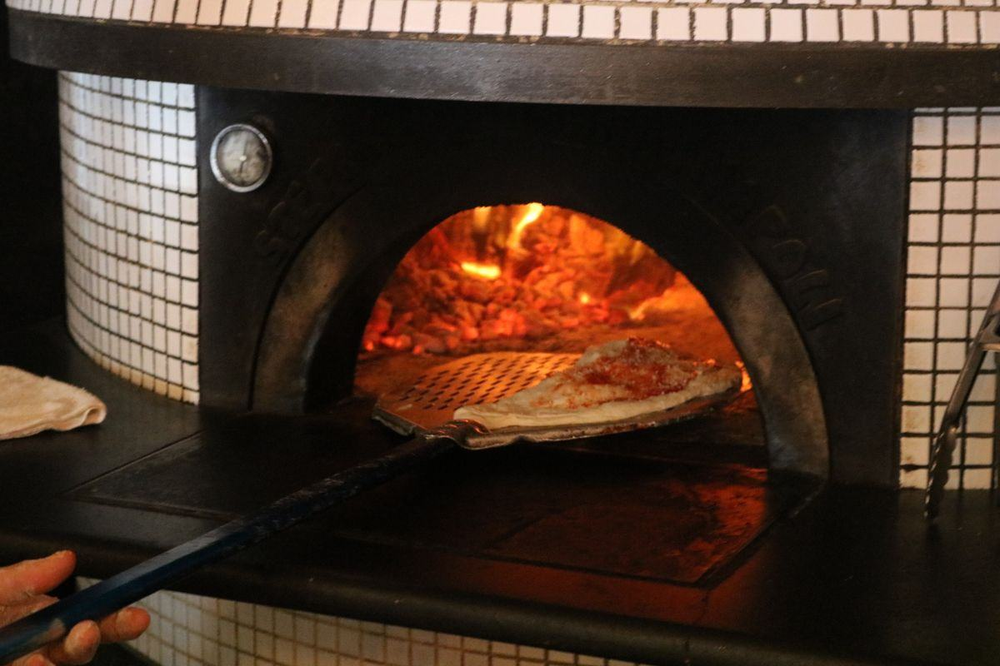

C'est la pièce la moins spectaculaire du four et pourtant celle qui décide de la croûte. Matières, épaisseurs, entretien, fissures et remplacement : ce qu'il faut savoir avant d'acheter ou de réparer.

Une pizza cuit par trois voies. Le rayonnement de la voûte colore le dessus, la convection de l'air sèche, mais c'est la conduction — le contact direct entre la pâte et la pierre — qui fait la base croustillante, le fond marqué et la tenue de la part quand on la soulève. Aucun réglage électronique ne compense une sole médiocre, mal chargée en chaleur ou en fin de vie. C'est pour cette raison qu'entre deux fours de prix voisins, la qualité de la sole compte souvent plus que le nombre de fonctions au tableau de bord.
Trois familles se partagent l'essentiel du marché professionnel. Aucune n'est meilleure en soi : elles répondent à des plages de température et à des styles de cuisson différents.
La référence des fours de pizzeria. Bonne conductivité, forte capacité de stockage, restitution franche : idéale entre 300 et 400 °C pour la pizza classique et la romaine. Sensible aux chocs thermiques brutaux et à l'humidité.
Très faible dilatation, donc excellente résistance aux variations rapides de température. On la trouve sur les fours très sollicités et sur les convoyeurs. Elle chauffe un peu moins fort en surface mais casse beaucoup moins.
Pierre poreuse et peu conductrice, historiquement utilisée pour la napolitaine. Elle transmet la chaleur plus doucement : à 450-480 °C, elle cuit le dessous en 60 à 90 secondes sans le carboniser. Fragile, poreuse, elle demande un vrai soin.
C'est un point souvent découvert trop tard : un four à bois ou un rotatif monté à 480 °C avec une sole en chamotte dense brûlera le dessous des napolitaines avant que le bord ne soit soufflé. Le remède n'est pas de baisser la température — ce serait renoncer au style — mais de changer de matière de sole.
L'inertie, c'est la quantité de chaleur que la sole peut stocker et la vitesse à laquelle elle la rend. Une pâte froide posée sur la pierre lui prélève brutalement de l'énergie ; si la réserve est faible, la surface s'effondre de plusieurs dizaines de degrés et la pizza suivante cuira moins bien. Plus la dalle est épaisse et dense, plus elle encaisse d'enfournements successifs — au prix d'une préchauffe plus longue, détaillée dans notre guide des températures de cuisson.
| Type de four | Épaisseur usuelle | Préchauffe de la sole | Comportement en service | Sole de remplacement HT |
|---|---|---|---|---|
| Électrique compact / snacking | 12 – 20 mm | 25 – 40 min | Réactive, mais chute vite en cadence soutenue | 150 – 300 € |
| Électrique 1 chambre pizzeria | 20 – 30 mm | 35 – 50 min | Bon compromis pour 25 à 40 pizzas/h | 250 – 450 € |
| Électrique 2 chambres | 25 – 35 mm | 40 – 60 min | Tient une cadence soutenue si les zones sont alternées | 400 – 700 € |
| Gaz | 25 – 40 mm | 20 – 35 min | Remontée rapide grâce à la puissance du brûleur | 350 – 700 € |
| Bois traditionnel | 40 – 80 mm (+ chape) | 1 h 30 – 3 h | Très forte réserve, chute lente, rattrapage lent | 500 – 900 € |
| Rotatif | 30 – 60 mm | 1 h – 2 h | Cuisson homogène, la rotation répartit l'usure | 500 – 900 € |
Fourchettes indicatives hors taxes pour la fourniture des dalles seules, hors main-d'œuvre et hors déplacement. Les prix varient fortement selon la surface, le nombre de dalles et la matière.
Une sole réfractaire est poreuse. Tout ce que vous y versez, elle l'absorbe — et le restitue ensuite dans le goût de vos pâtes. La règle est donc simple et sans exception : jamais d'eau, jamais de détergent, jamais de produit dégraissant sur une sole, et encore moins sur une sole chaude, où le choc thermique peut la fendre instantanément.
En fin de service, four encore chaud mais éteint, passez la brosse en laiton ou en inox à manche long pour décoller la farine brûlée et les résidus de garniture. Balayez vers l'avant, ramassez avec une pelle, jamais avec un chiffon humide.
Four froid, racloir plat pour les points de fromage carbonisés, puis brosse. Une tache brune qui reste n'est pas un problème d'hygiène : la sole se stérilise à 300 °C à chaque préchauffe. Ne vous acharnez pas, vous useriez la pierre.
Une pizza qui déborde et coule, une huile versée directement, une pelle qui racle en biais, un excès de semoule qui brûle et s'incruste, et surtout un choc thermique : porte grande ouverte en pleine chauffe, ou pierre humide remise en température.
Si une sole a été mouillée, il faut la sécher très progressivement : montée en température lente sur plusieurs heures. Une pierre gorgée d'eau chauffée brutalement éclate, car la vapeur ne peut pas s'échapper assez vite.
Une fissure fine, nette, qui ne bouge pas et ne fait pas d'écart de niveau entre les deux bords, n'est pas une urgence. Les dalles de chamotte fissurent avec le temps, c'est presque normal après quelques années de cycles quotidiens à 350 °C, et cela n'altère pas la cuisson tant que la surface reste plane. Ce qui impose un remplacement, c'est autre chose :
Deux bords de fissure qui ne sont plus dans le même plan accrochent la pelle, déchirent la pâte et créent une zone de sous-cuisson. Remplacement de la dalle concernée.
Après des années, la zone la plus utilisée se creuse de quelques millimètres. La pizza y stagne, la semoule s'y accumule, la cuisson devient irrégulière.
Des morceaux qui se détachent finissent dans les pizzas. Là, aucune tolérance : on change, c'est un sujet d'hygiène autant que de cuisson.
Bonne nouvelle : sur la plupart des fours, la sole se change sans intervention lourde et coûte 150 à 900 € HT, à comparer aux 1 500 à 4 000 € HT d'un four électrique neuf une chambre. Avant de remplacer un four qui cuit mal, faites toujours vérifier trois choses : l'état de la sole, l'étalonnage de la sonde et l'étanchéité de la porte. Si le diagnostic conclut au remplacement, notre guide des prix et notre comparatif quel four choisir vous donneront les bons ordres de grandeur.
Décrivez votre matériel et votre besoin : un fournisseur spécialisé vous répond sous 24 h ouvrées, gratuitement.